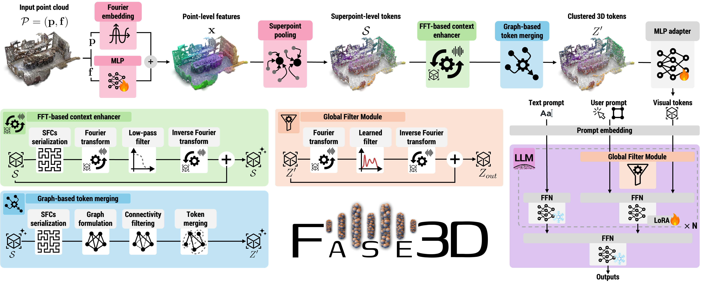

Qualitative Results
Fase3D demonstrates strong capabilities in 3D Scene QA, Dense Captioning, and Spatial Reasoning.

3D Scene QA Performance
FFT-based Token Merging
Large Multimodal Models (LMMs) processing 3D data typically rely on heavy, pre-trained visual encoders. While recent 2D LMMs eliminate such encoders for efficiency, extending this to 3D remains challenging due to the unordered and large-scale nature of point clouds. We propose Fase3D, the first efficient encoder-free Fourier-based 3D scene LMM.
Fase3D leverages a novel tokenizer combining point cloud serialization and the Fast Fourier Transform (FFT) to approximate self-attention. This design enables scalable global context modeling and graph-based token merging. Coupled with lightweight Fourier-augmented LoRA adapters, Fase3D injects global frequency-aware interactions into the LLM at negligible computational cost.
Massive 3D point clouds are grouped into compact superpoints, drastically reducing token counts while preserving crucial geometry.
Unordered 3D data is serialized via a space-filling curve. Fast Fourier Transform (FFT) efficiently models global context without quadratic self-attention costs.
Lightweight adapters inject global frequency-aware interactions directly into the pre-trained LLM at almost zero extra computational cost.

Unlike traditional pipelines requiring PointNet++ or Sparse Convolutions, Fase3D directly processes geometric features. The architecture serializes spatial coordinates, passes them through a continuous Fourier transform layer, and dynamically fuses them with textual inputs. This guarantees both permutation invariance and linear scaling with respect to the number of input points.
Fase3D demonstrates strong capabilities in 3D Scene QA, Dense Captioning, and Spatial Reasoning.
3D Scene QA Performance
FFT-based Token Merging
@inproceedings{mei2026fase3d,
title={Efficient Encoder-Free Fourier-based 3D Large Multimodal Model},
author={Mei, Guofeng and Lin, Wei and Riz, Luigi and Wu, Yujiao and Wang, Yiming and Poiesi, Fabio},
booktitle={Proceedings of the IEEE/CVF Conference on Computer Vision and Pattern Recognition (CVPR)},
year={2026}
}